Types of diets
Tips for beginners
Write a feedback
Follow Me
The Importance of Good Nutrition
Most people know good nutrition and physical activity can help maintain a healthy weight. But the benefits of good nutrition go beyond weight. Good nutrition can help: reduce the risk of some diseases, including heart disease, diabetes, stroke, some cancers, and osteoporosis, reduce high blood pressure, lower high cholesterol, improve your well-being, improve your ability to fight off illness, improve your ability to recover from illness or injury,increase your energy level.
Good nutrition means your body gets all the nutrients, vitamins, and minerals it needs to work its best. Plan your meals and snacks to include nutrient-dense foods that are also low in calories.
Stay motivated to eat healthy
What should you eat if you suffer from Crohn's disease(ulcerative colitis)
It’s not always easy knowing what foods best fuel your body, especially when you have Crohn's disease or ulcerative colitis. Your diet and nutrition are a major part of life with inflammatory bowel disease (IBD), yet there is no single diet that works for everyone. Nutrition affects not just your IBD symptoms, but also your overall health and well-being. Without proper nutrients, the symptoms of your Crohn’s disease or ulcerative colitis can cause serious complications, including nutrient deficiencies, weight loss, and malnutrition. While there is no one-size-fits-all for meal planning, these tips can help guide you toward better daily nutrition: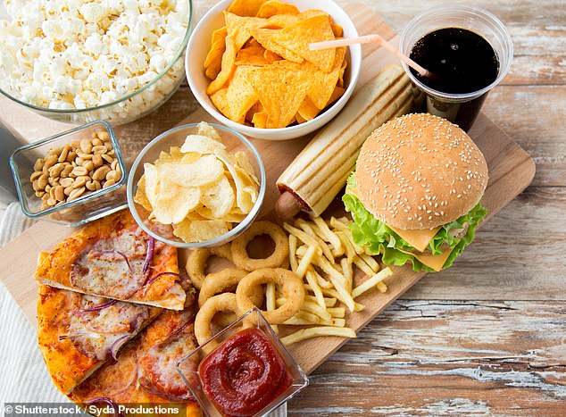 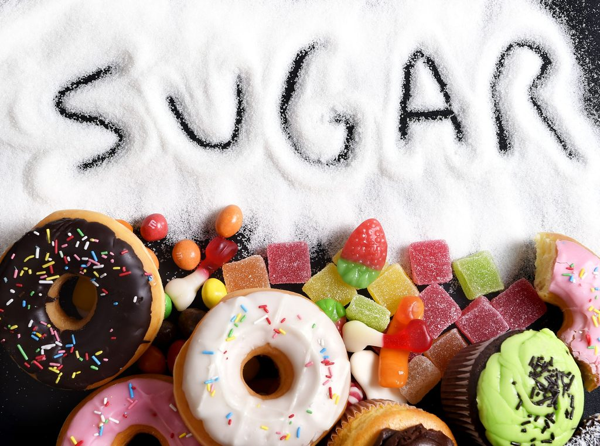 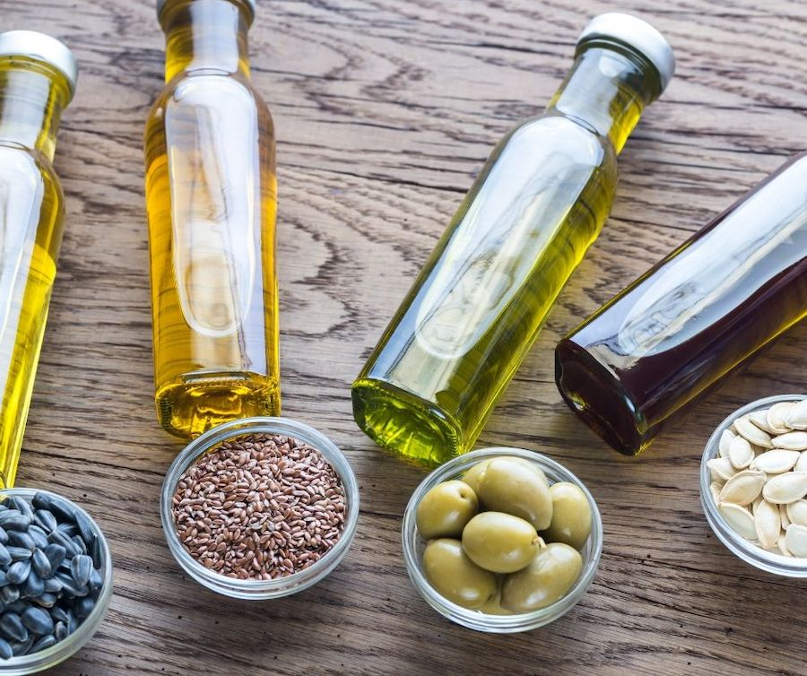 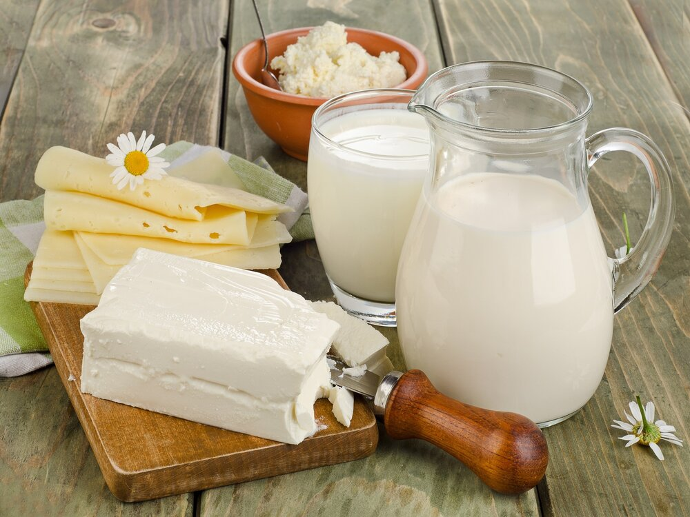 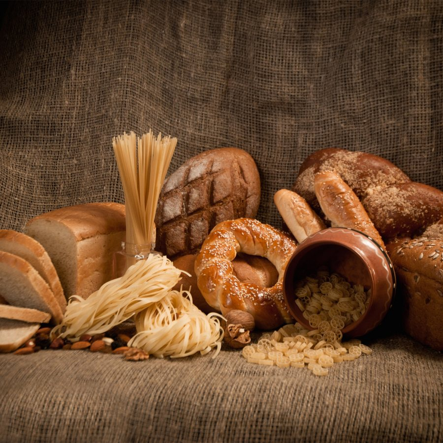
- Eat four to six small meals daily.
- Stay hydrated
- Drink slowly and avoid using a straw, which can cause you to ingest air.
- Prepare meals in advance, and keep your kitchen stocked with foods that you tolerate.
- Use simple cooking techniques — boil, grill, steam, poach.
 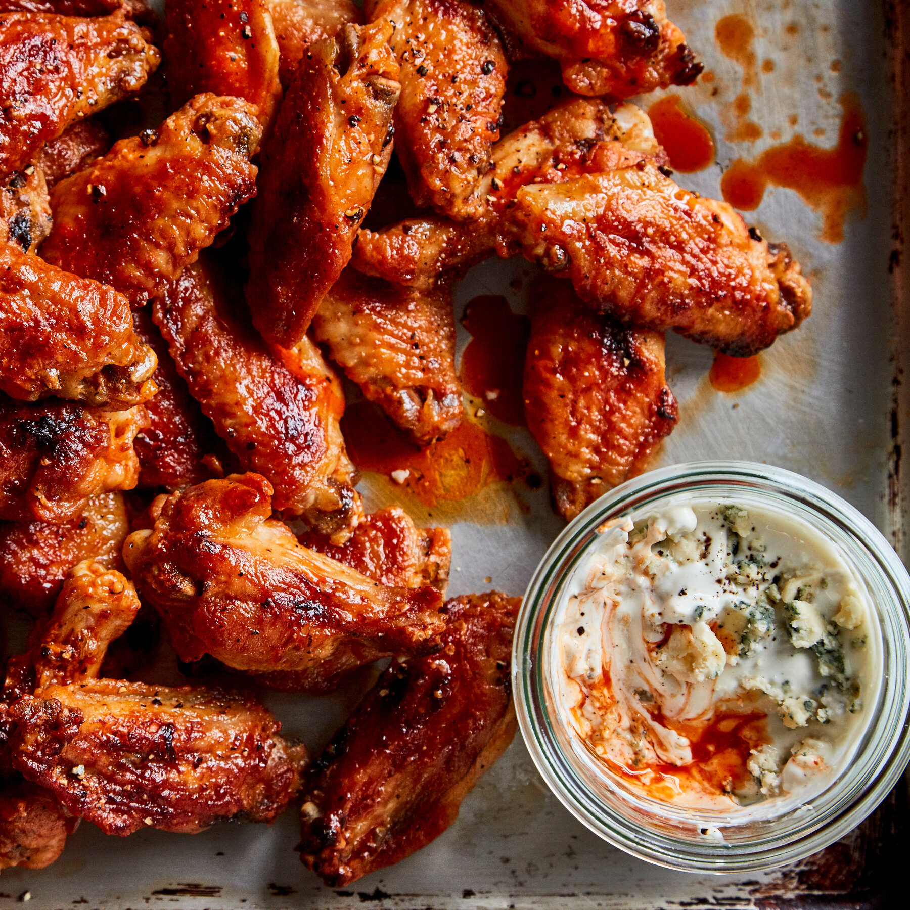
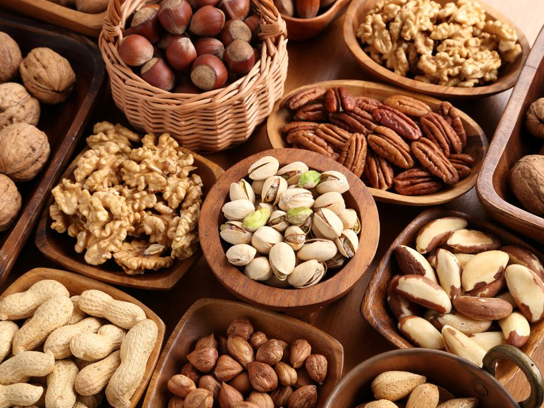
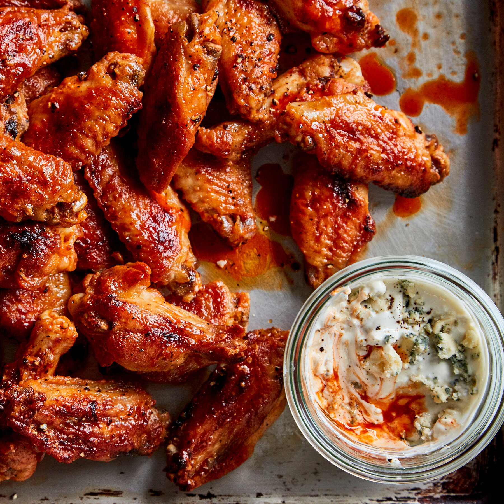
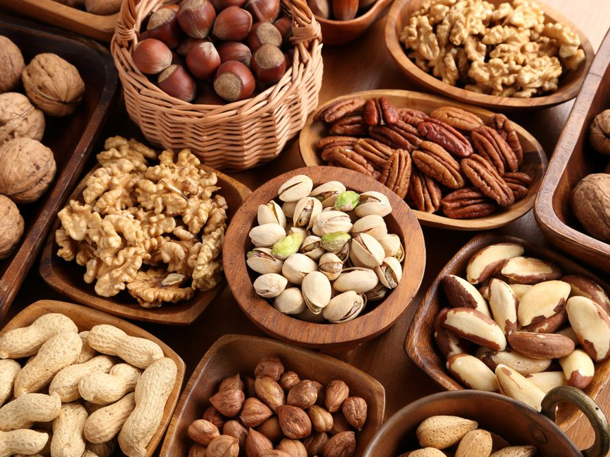
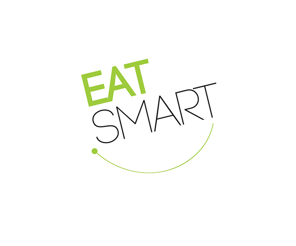
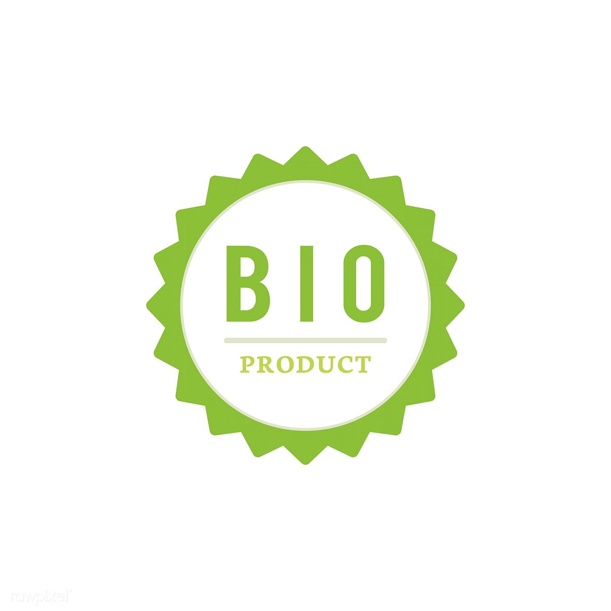